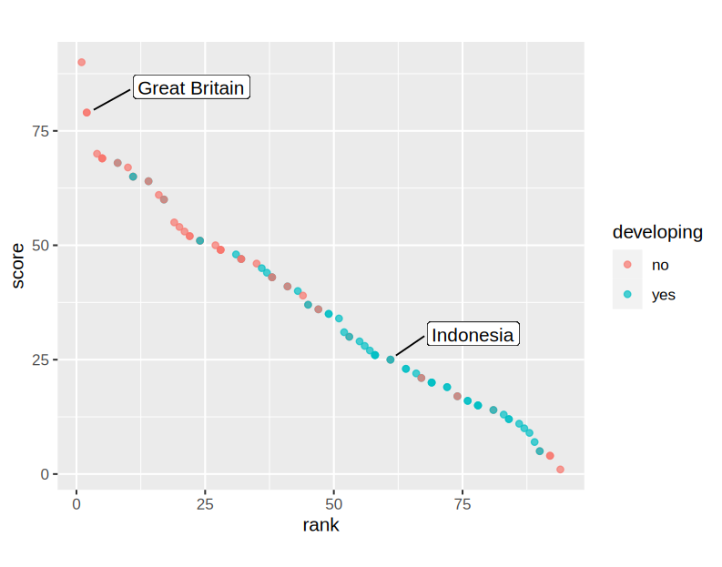

Every second, digital information is acquired and stored. Together, an innumerable amount of data is created which consists of both—data about our environment and data about ourselves. A major proportion of these data are created by the government of any particular country. Any sector like agriculture, healthcare, law enforcement, or education collects as well as generates data, which are accessible either for an entitled group of persons inside the government or for every individual as free accessible data. Latter reflects the basic principle of Open Government Data. However, this report intends to focus on Linked Open Government Data. Therefore, this work provides in Section 2 a brief overview of the involved technologies.
Since half of the countries, which implement and offer Open Government Data are classified as developing countries [Verhulst and Young 2017], this work also develops a minor literature study about the adoption and possibilities of Linked Open Government Data in developing countries compared to developed countries. To achieve this, Section 3 uses Great Britain as use-case for a developed country and Section 4 examines the aspects from a developing country perspective—Indonesia.
Section 5 analyzes the findings from a critical point of view, supports these by further collected data, and concludes the work.
Verhulst and Young (2017) outlines the process of data, which are firstly collected and eventually used, as the 'Data Life Cycle': Collection - Processing - Sharing - Analyzing - Using. If the results of this pipeline are data that can be used by everyone without charges and behoove the free-to-use license, the data are specified as Open Data (OD) [Berners-Lee 2009]. Applications can make use of these free data to achieve another goal as the initial intended one. Linked Open Data (LOD) are an extension of OD such that the data 'refers to data published on the Web in such a way that it is machine-readable, its meaning is explicitly defined, it is linked to other external data sets, and can in turn be linked to from external data sets' [Bizer et al. 2011]. This is fulfilled, if datasets are sharing the same vocabulary, have identifiers (URIs), are also linked to common websites, and preserve their provenance [Ding et al. 2010]. Open Government Data (OGD) is a specialization of OD and focus on government data. The goal is to achieve transparency for the citizen, provide access to legal matters, and involve the people in government affairs [Aryan et al. 2014]. Beyond, the state as such is a crucial data supplier to create 'citizen-centered' services [Shadbolt et al. 2012]. Linked Open Government Data (LOGD) combines all aspects of OD, LOD, and OGD.
Berners-Lee (2009) introduced five categories, i.e. 'stars', to identify the different levels of LOD. The first three stars are related to the openness, machine readability, and the format of the data. The fourth category requires a semantic representation like RDF, and the fifth dimension is achieved if the data is embedded in an external context. This 5-star-model was extended by Janowicz et al. (2014) through another 5-star-rating for Linked Data vocabulary use. The present work makes use of both definitions and explains both later on.
This section uses Great Britain as a use-case to analyze LOGD in an environment of a developed country. In 2015, together with Australia (also a developed country), Great Britain took second place in the Global Open Data Index (2016). Since 2013, the index rates annual countries according to their OGD. Openness, machine readability, and timeliness are only a few parameters among others, which count towards the score and the actual rank of such OGDs. However, this index does not take the fourth and fifth dimensions from Berners-Lee's 5-star-model into account. Thus, this report uses the study of Shadbolt et al. (2012) to examine also these dimensions.
In their research, thousand of open and free datasets were uncovered. All datasets were available in a machine-readable format such as CSV. Nevertheless, these datasets are available with less to zero RDF structures and distributed over several different locations without any link. This prevents end-users and third-party systems from creating comprehensive, location-independent queries and services. Shadbolt et al. (2012) used a semi-automatic process, to convert available data in RDF structure and preserve provenance. Since any data were already in a machine-readable format, this conversion is negligible. A crucial step next to the 5-star-data is to create also a 5-star-vocabulary according to Janowicz et al. (2014). Since all datasets are related to a particular government sector (e.g. healthcare), the vocabulary is related to this domain accordingly and could be incomprehensible for the end-user. OWL properties, such as 'OWL:sameAs' are used to achieve a link to a user-friendly vocabulary. If meta-data would be introduced and other vocabularies would reference this new vocabulary, it would also be classified as a 5-star-vocabulary. The authors created several real-world applications based on the improved data and vocabularies.
This use-case of a developed country reveals that high ranked countries already provide an extensive amount of OGD of sufficient quality. However, comprehensive LOGD is not taken into account in this ranking and also not yet fully developed, even though the foundation and awareness for LOGD have already been created.
In this section, the adoption of LOGD is examined by taking Indonesia as a developing country example. According to the International Statistical Institute (2020), a developing country is considered as such if the Gross National Income (GNI) is less than US$ 12.056. Apart from the overarching work from Verhulst and Young (2017) which examines OD in developing countries and the Open Data for Development Network (OD4D) project which publishes annual reports, significant less literature was found which analyzes the usage of actual LOGD in developing countries. However, Aryan et al. analyzed 2014 LOGD in Indonesia and showed that from eight OGD online portals, none of them were ranked with more than three stars and only one was ranked with three stars of the 5-star-model. These results can be validated by taken the Global Open Data Index for the year 2014 into account. Indonesia was ranked on #45 with an overall 'openness' score of 43%. In comparison, Great Britain achieved 97% in 2014. Aryan et al. (2014) introduced a prototype to transform existing data from non-machine readable formats (e.g. from PDF files) into machine-readable formats and used a semi-automatically process to enrich the data with RDF syntax. Thus, the authors were able to use the query language SPARQL to run queries on the different linked datasets. After this proposal, however, the LOGD from Indonesia can be still ranked with zero stars according to the 5-star-vocabulary model from Janowicz et al. (2014), since the framework achieved only LOGD without any vocabulary.
This use-case of a developing country reveals that indeed OGD is already provided by developing countries but still of insufficient quality. Even though some data is already open, most of them are not in a machine-readable format and support therefore no LOGD at all.
The two case-studies uncovered, that there is a crucial gap between developed and developing countries with respect to LOGD. The literature of LOGD in developed countries are facing as well as solving already in-depth problems, like creating common ontologies for LOGD, and create transparent services for the citizen while developing countries are still striving for openness and machine-readability of the data in the first place. This conclusion is also supported by Figure 1, which illustrates the mapping of the country's status (developed and developing) to the results of the Global Open Data Index (2016). It can be observed that more than 80% of the lower-ranked countries (#47 to #94) are developing countries.
Overall, it can be concluded, that LOD indeed supports closing the gap between the government and citizens in a transparent way. However, for developing countries, the question should be raised about how LOGD could be useful for individuals in the first place if only 47% of individuals from developing countries have access to the internet [Bogdan-Martin 2019]. This aspect is also considered as one crucial element in the 'Periodic Table of Open Data Impact Elements' from Verhulst and Young (2017)—Tech Literacy and Internet Penetration (Lp). Beyond, instead of creating LOGD for each country-ecosystem individually, the next major step should be 'Cross-National Linked Open Government Data'.